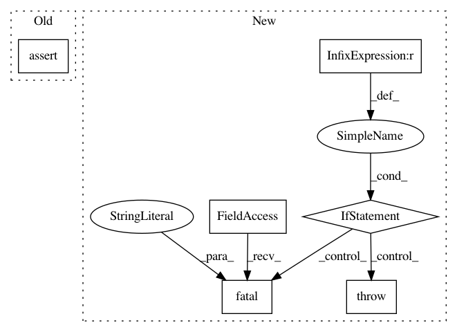

6df74e5750f146bfd7bc5e7a2c49b2e40d6a457c,niftynet/engine/application_variables.py,OutputsCollector,_add_to_dict,#OutputsCollector#Any#Any#Any#Any#,58
Before Change
if do_averaging and self.n_devices > 1:
// collecting variables across devices as a list
var_list = var_dict.get(name, [])
assert isinstance(var_list, list), \
"averaged variable name {} has been taken".format(name)
var_list.append(var)
var_dict[name] = var_list
assert len(var_list) <= self.n_devices, \
"averaged variable {} has been used " \
After Change
"averaged variable name %s has been taken", name)
raise
var_dict[name] = var_list
if len(var_list) > self.n_devices:
tf.logging.fatal("averaged variable %s has been used "
"in the collector", name)
raise ValueError
return name
else:
// collecting variables and rename if exists
new_name = name
In pattern: SUPERPATTERN
Frequency: 3
Non-data size: 6
Instances
Project Name: NifTK/NiftyNet
Commit Name: 6df74e5750f146bfd7bc5e7a2c49b2e40d6a457c
Time: 2017-08-31
Author: wenqi.li@ucl.ac.uk
File Name: niftynet/engine/application_variables.py
Class Name: OutputsCollector
Method Name: _add_to_dict
Project Name: NifTK/NiftyNet
Commit Name: 6d854ec8c54e0eb0a73635f41b0598f2d2231069
Time: 2017-09-01
Author: wenqi.li@ucl.ac.uk
File Name: niftynet/engine/windows_aggregator_base.py
Class Name: ImageWindowsAggregator
Method Name: crop_batch
Project Name: NifTK/NiftyNet
Commit Name: ffa271e34384438030753e46e20322ea8dc489a4
Time: 2017-08-23
Author: wenqi.li@ucl.ac.uk
File Name: niftynet/engine/application_driver.py
Class Name: ApplicationDriver
Method Name: _randomly_init_or_restore_variables